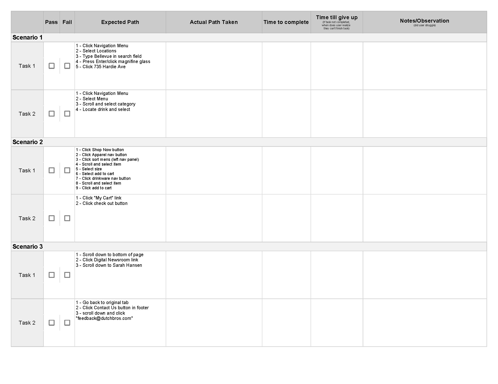
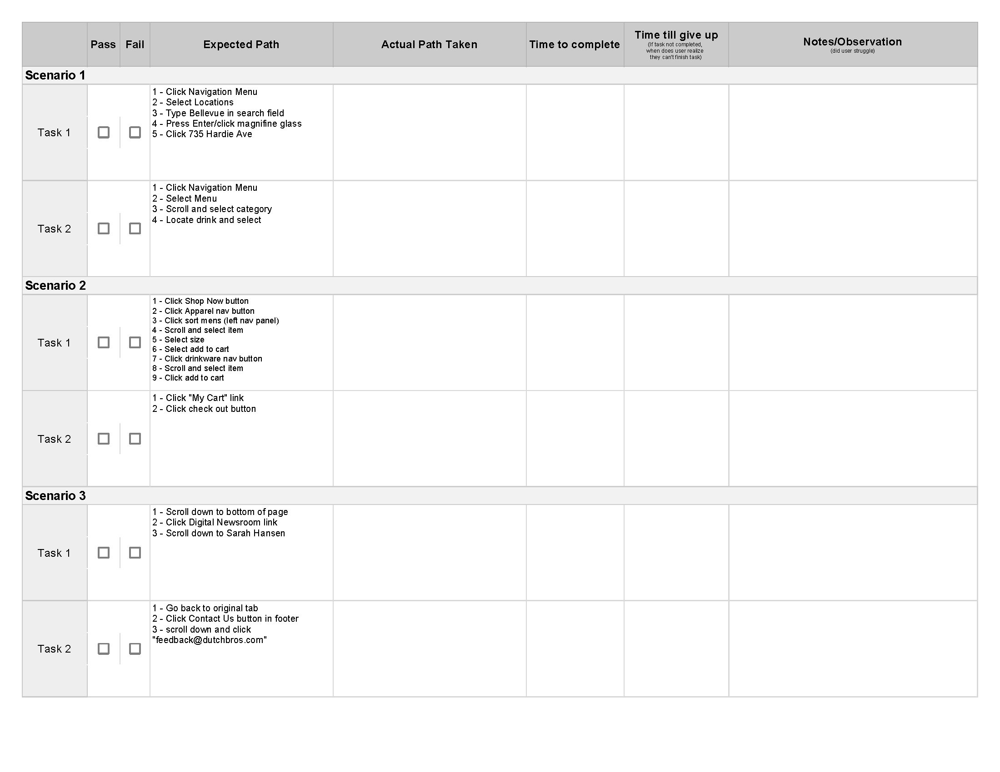

Observed Testing Sheet
Sheet used to observe a users path through the original site.
Dutch Bros Coffee had a website that suffered from a disconnected design and layout. It was clear that the site was actually a mix of different templates and URLs. Before redesigning the site it was tested with a heuristic evaluation, observed user testing, and surveys. With a clearer picture of the user's needs, the site was unified with consistent elements, layout, and branding.
Sheet used to observe a users path through the original site.
The original site was Evaluated using the Userfocus Heuristic Evaluation.
 Evaluation
Evaluation